plot(pressure)
text(150, 600,
"Pressure (mm Hg)\nversus\nTemperature (Celsius)")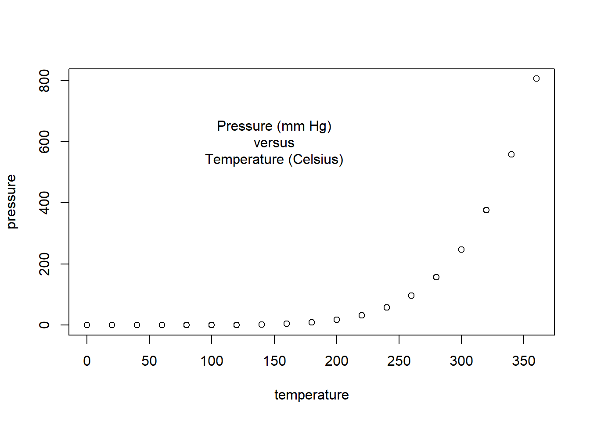
#
# Comment:
#
# Examples of the use of standard high-level plotting functions.
#
# In each case, extra output is also added using low-level
# plotting functions.
#
par(mfrow=c(3, 2))
# Scatterplot
x <- c(0.5, 2, 4, 8, 12, 16)
y1 <- c(1, 1.3, 1.9, 3.4, 3.9, 4.8)
y2 <- c(4, .8, .5, .45, .4, .3)
par(las=1, mar=c(4, 4, 2, 4), cex=.7)
plot.new()
plot.window(range(x), c(0, 6))
lines(x, y1)
lines(x, y2)
points(x, y1, pch=16, cex=2)
points(x, y2, pch=21, bg="white", cex=2)
par(col="gray50", fg="gray50", col.axis="gray50")
axis(1, at=seq(0, 16, 4))
axis(2, at=seq(0, 6, 2))
axis(4, at=seq(0, 6, 2))
box(bty="u")
mtext("Travel Time (s)", side=1, line=2, cex=0.8)
mtext("Responses per Travel", side=2, line=2, las=0, cex=0.8)
mtext("Responses per Second", side=4, line=2, las=0, cex=0.8)
text(4, 5, "Bird 131")
par(mar=c(5.1, 4.1, 4.1, 2.1), col="black", fg="black", col.axis="black")
# Histogram
# Random data
Y <- rnorm(50)
# Make sure no Y exceed [-3.5, 3.5]
Y[Y < -3.5 | Y > 3.5] <- NA
x <- seq(-3.5, 3.5, .1)
dn <- dnorm(x)
par(mar=c(4.5, 4.1, 3.1, 0))
hist(Y, breaks=seq(-3.5, 3.5), ylim=c(0, 0.5),
col="gray80", freq=FALSE)
lines(x, dnorm(x), lwd=2)
par(mar=c(5.1, 4.1, 4.1, 2.1))
# Barplot
# Modified from example(barplot)
par(mar=c(2, 3.1, 2, 2.1))
midpts <- barplot(VADeaths,
col=gray(0.1 + seq(1, 9, 2)/11),
names=rep("", 4))
mtext(sub(" ", "\n", colnames(VADeaths)),
at=midpts, side=1, line=0.5, cex=0.5)
text(rep(midpts, each=5), apply(VADeaths, 2, cumsum) - VADeaths/2,
VADeaths,
col=rep(c("white", "black"), times=3:2),
cex=0.8)
par(mar=c(5.1, 4.1, 4.1, 2.1))
# Boxplot
# Modified example(boxplot) - itself from suggestion by Roger Bivand
par(mar=c(3, 4.1, 2, 0))
boxplot(len ~ dose, data = ToothGrowth,
boxwex = 0.25, at = 1:3 - 0.2,
subset= supp == "VC", col="white",
xlab="",
ylab="tooth length", ylim=c(0,35))
mtext("Vitamin C dose (mg)", side=1, line=2.5, cex=0.8)
boxplot(len ~ dose, data = ToothGrowth, add = TRUE,
boxwex = 0.25, at = 1:3 + 0.2,
subset= supp == "OJ")
legend(1.5, 9, c("Ascorbic acid", "Orange juice"),
fill = c("white", "gray"),
bty="n")
par(mar=c(5.1, 4.1, 4.1, 2.1))
# Persp
# Almost exactly example(persp)
x <- seq(-10, 10, length= 30)
y <- x
f <- function(x,y) { r <- sqrt(x^2+y^2); 10 * sin(r)/r }
z <- outer(x, y, f)
z[is.na(z)] <- 1
# 0.5 to include z axis label
par(mar=c(0, 0.5, 0, 0), lwd=0.5)
persp(x, y, z, theta = 30, phi = 30,
expand = 0.5)
par(mar=c(5.1, 4.1, 4.1, 2.1), lwd=1)
# Piechart
# Example 4 from help(pie)
par(mar=c(0, 2, 1, 2), xpd=FALSE, cex=0.5)
pie.sales <- c(0.12, 0.3, 0.26, 0.16, 0.04, 0.12)
names(pie.sales) <- c("Blueberry", "Cherry",
"Apple", "Boston Cream", "Other", "Vanilla")
pie(pie.sales, col = gray(seq(0.3,1.0,length=6)))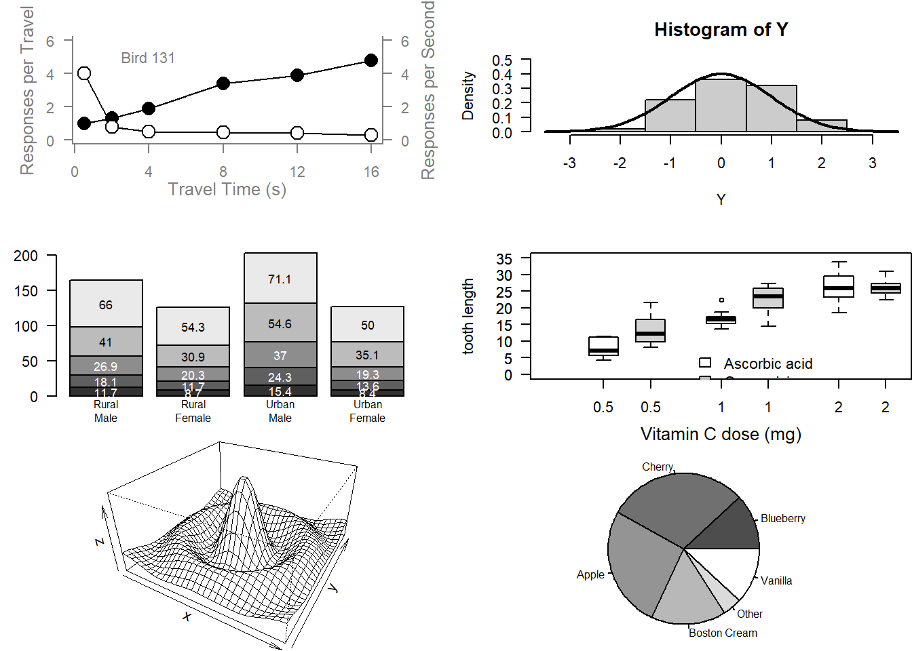
#
# Comment:
#
# A sophisticated example of adding further output to a basic plot.
#
# Most of the functions defined are just for calculating values
# relevant to the data analysis.
#
# The function plotPars() is the one of interest for seeing how
# the drawing of the plot is done.
#
params <- function(N, breaks, p=seq(0.001, 1, length=100)) {
list(N=N, T=1/breaks, p=p, q=1-p)
}
pdfcomp <- function(comp, params) {
n <- params$T
p <- params$p
q <- params$q
y <- round(comp/n)
choose(n, comp)*p^comp*q^(n-comp) / (1 - q^n)
}
# Expected num sherds (for a vessel) [=completeness]
expcomp <- function(params) {
params$T*params$p/(1-params$q^params$T)
}
# Variance of num sherds (for a vessel)
varcomp <- function(params) {
n <- params$T
p <- params$p
q <- params$q
# From Johnson & Kotz
(n*p*q / (1 - q^n)) - (n^2*p^2*q^n / (1 - q^n)^2)
# n^2 times Thomas Yee's formula
# n^2*((p*(1 + p*(n - 1)) / (n*(1 - q^n))) - (p^2 / (1 - q^n)^2))
}
# Expected value of completeness (for a sample of vessels)
expmeancomp <- function(params) {
expcomp(params)
}
# Variance of completeness (for a sample of vessels)
# Use the expected number of vessels in sample as denominator
varmeancomp <- function(params) {
varcomp(params)/(numvess(params))
}
numvess <- function(params) {
params$N*(1-params$q^params$T)
}
ecomp <- function(p, T, comp) {
q <- 1 - p
T*p/(1 - q^T) - comp
}
estN <- function(comp, broke, n) {
T <- 1/broke
n / (1 - (1 - uniroot(ecomp, c(0.00001, 1), T=T, comp=comp)$root)^T)
}
nvessscale <- function(params, xlim, ylim, new=TRUE) {
if (new)
par(new=TRUE)
plot(0:1, c(1, params$N), type="n", axes=!new, ann=FALSE,
xlim=xlim, ylim=ylim)
}
compscale <- function(params, xlim, ylim, new=TRUE) {
if (new)
par(new=TRUE)
plot(0:1, c(1, params$T), type="n", axes=!new, ann=FALSE,
xlim=xlim, ylim=ylim)
}
lowerCI <- function(p, N, breaks, lb) {
params <- params(N, breaks, p)
expmeancomp(params) - 2*sqrt(varmeancomp(params)) - lb
}
upperCI <- function(p, N, breaks, lb) {
params <- params(N, breaks, p)
expmeancomp(params) + 2*sqrt(varmeancomp(params)) - lb
}
critP <- function(comp, params) {
c(uniroot(lowerCI, c(0.00001, 1), N=params$N,
breaks=1/params$T, lb=max(comp))$root,
if (upperCI(0.00001, params$N, 1/params$T, min(comp)) > 0) 0
else uniroot(upperCI, c(0.00001, 1), N=params$N,
breaks=1/params$T, lb=min(comp))$root)
}
anncomp <- function(params, comp, xlim, ylim, cylim) {
cp <- critP(comp, params)
nv <- numvess(params(params$N, 1/params$T, cp))
nvessscale(params, xlim, ylim)
polygon(c(cp[2], cp[2], 0, 0, cp[1], cp[1]),
c(0, nv[2], nv[2], nv[1], nv[1], 0),
col="gray90", border=NA)
text(0, nv[1], paste(round(nv[1]),
" (", round(100*nv[1]/params$N), "%)", sep=""),
adj=c(0, 0), col="gray")
text(0, nv[2], paste(round(nv[2]),
" (", round(100*nv[2]/params$N), "%)", sep=""),
adj=c(0, 1), col="gray")
compscale(params, xlim, cylim)
segments(1, min(comp), cp[2], comp, col="gray")
segments(1, max(comp), cp[1], comp, col="gray")
text(1, comp, paste(comp, collapse="-"), adj=c(1, 0), col="gray")
}
plotPars <- function(params, comp, xlim=NULL, ylim=NULL) {
mean <- expmeancomp(params)
var <- 2*sqrt(varmeancomp(params))
lb <- mean - var
ub <- mean + var
par(mar=c(5, 4, 4, 4))
if (is.null(ylim))
cylim <- ylim
else
cylim <- c(1 + ((ylim[1] - 1)/(params$N - 1))*(params$T - 1),
1 + ((ylim[2] - 1)/(params$N - 1))*(params$T - 1))
nvessscale(params, xlim, ylim, new=FALSE)
compscale(params, xlim, cylim)
polygon(c(params$p, rev(params$p)), c(lb, rev(ub)),
col="gray90", border=NA)
anncomp(params, comp, xlim, ylim, cylim)
nvessscale(params, xlim, ylim)
mtext("Number of Vessels", side=2, line=3)
mtext("Sampling Fraction", side=1, line=3)
lines(params$p, numvess(params))
par(new=TRUE)
compscale(params, xlim, cylim)
mtext("Completeness", side=4, line=3)
axis(4)
lines(params$p, mean, lty="dashed")
lines(params$p, lb, lty="dotted")
lines(params$p, ub, lty="dotted")
mtext(paste("N = ", round(params$N),
" brokenness = ", round(1/params$T, 3), sep=""),
side=3, line=2)
}
par(cex=0.8, mar=c(3, 3, 3, 3))
p6 <- params(estN(1.2, 0.5, 200), 0.5)
plotPars(p6, 1.2)
nvessscale(p6, NULL, NULL)
pcrit <- 1 - (1 - 200/estN(1.2, 0.5, 200))^(1/p6$T)
lines(c(0, pcrit), c(200, 200))
lines(c(pcrit, pcrit), c(200, 0))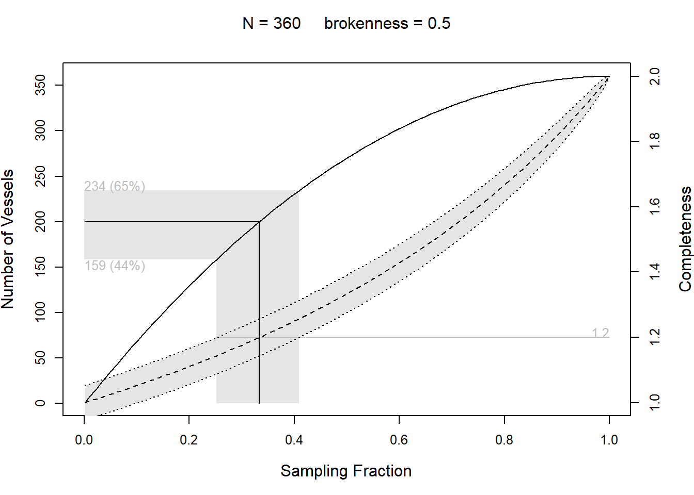
Warning: package 'grImport' was built under R version 4.5.3Loading required package: gridLoading required package: XMLLoading required package: colorspacesource(system.file("extra", "grayify.R", package="RGraphics"))
grid.newpage()
pushViewport(plotViewport(c(3, 2, 2, 1)),
viewport(xscale=c(1991, 2003), yscale=c(0, 250)))
grid.rect()
# tiger backdrop in gray
grImport::grid.picture(tiger, x=0.45, FUN=grayify, min=.8)
grid.xaxis(at=year, gp=gpar(cex=0.7))
grid.yaxis(gp=gpar(cex=0.7))
# black bars
grid.rect(x=unit(year, "native"), y=0,
width=unit(1, "native"), height=unit(maxpop, "native"),
just="bottom", gp=gpar(fill="black"))
# tiger in bars
tigerGrob <- grImport::pictureGrob(tiger, x=0.45,
FUN=grImport::grobify)
# Start from 2 because bar 1 does not overlap with tiger
for (i in 2:length(year)) {
grid.clip(x=unit(year[i], "native"), y=0,
width=unit(1, "native"), height=unit(maxpop[i], "native"),
just="bottom")
# tiger backdrop (shift slightly to left so get one eye in one bar)
grid.draw(tigerGrob)
}
grid.clip()
# redo bar borders
grid.rect(x=unit(year, "native"), y=0,
width=unit(1, "native"), height=unit(maxpop, "native"),
just="bottom", gp=gpar(fill=NA))
grid.text("Estimated Population (max.) of Bengal Tigers\n(in Bhutan)",
y=unit(1, "npc") + unit(1, "lines"))
popViewport(2)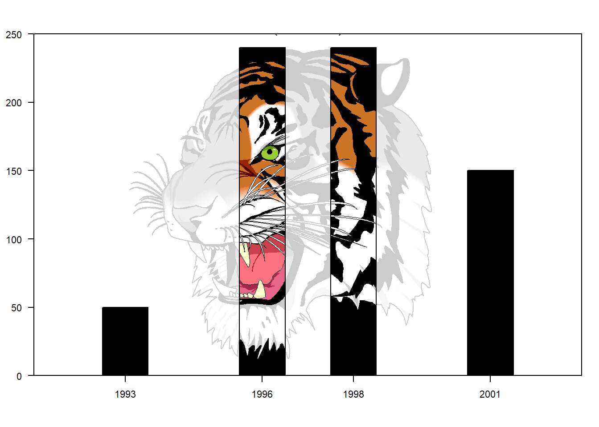
#
# Comment:
#
# A slightly modified version of Figure 1.1 from
# Cleveland's book "Visualizing Data"
#
library(lattice)
trellis.par.set(list(fontsize=list(text=6),
par.xlab.text=list(cex=1.5),
add.text=list(cex=1.5),
superpose.symbol=list(cex=.5)))
key <- simpleKey(levels(lattice::barley$year), space = "right")
key$text$cex <- 1.5
print(
dotplot(variety ~ yield | site, data = lattice::barley, groups = year,
key = key,
xlab = "Barley Yield (bushels/acre) ",
aspect=0.5, layout = c(1,6), ylab=NULL)
)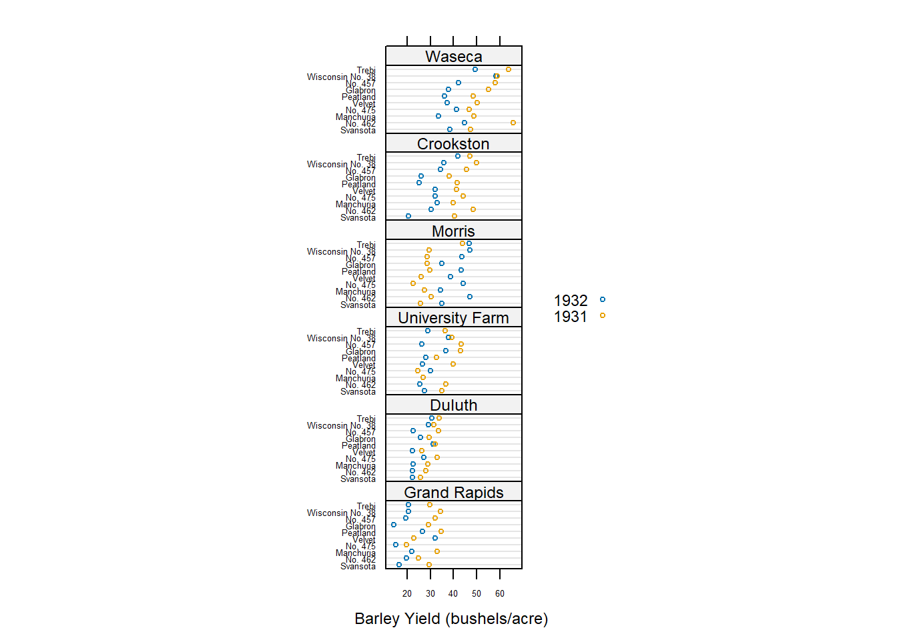
Warning: package 'ggplot2' was built under R version 4.5.3`geom_smooth()` using formula = 'y ~ x'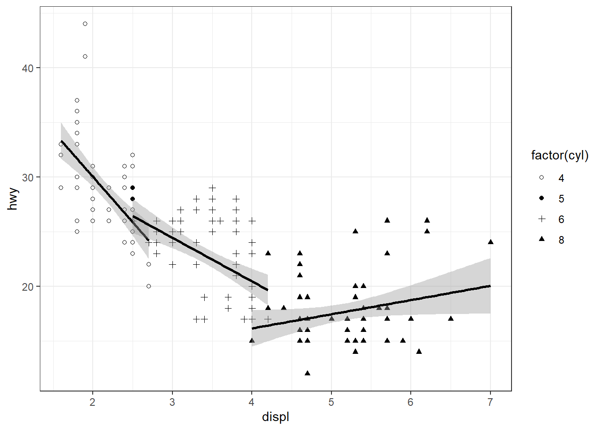
#
# Comment:
#
# A bit of mucking around is required to get the second (whole-world)
# map positioned correctly; this provides an example of calling a
# plotting function to perform calculations but do no drawing (see the
# second call to the map() function).
#
# Makes use of the "maps", "mapdata", and "mapproj" packages to draw the maps.
#
library(maps)
library(mapdata)Warning: package 'mapdata' was built under R version 4.5.3Warning: package 'mapproj' was built under R version 4.5.3par(mar=rep(1, 4))
maps::map("nzHires", fill=TRUE, col="gray80",
regions=c("North Island", "South Island", "Stewart Island"))
points(174.75, -36.87, pch=16, cex=2,
col=rgb(0,0,0,.5))
arrows(172, -36.87, 174, -36.87, lwd=3)
text(172, -36.87, "Auckland ", adj=1, cex=2, xpd=NA)
# mini world map as guide
maplocs <- maps::map(projection="sp_mercator", wrap=TRUE, lwd=0.1,
col="gray", ylim=c(-60, 75),
interior=FALSE, orientation=c(90, 180, 0), add=TRUE,
plot=FALSE)
xrange <- range(maplocs$x, na.rm=TRUE)
yrange <- range(maplocs$y, na.rm=TRUE)
aspect <- abs(diff(yrange))/abs(diff(xrange))
# customised to 6.5 by 4.5 figure size
device.size <- dev.size("in")
par(fig=c(0.99 - 0.5, 0.99,
0.01, 0.01 + 0.5*aspect*device.size[2]/device.size[1]),
mar=rep(0, 4), new=TRUE)
plot.new()
plot.window(xlim=xrange,
ylim=yrange)
suppressWarnings(
maps::map(projection="sp_mercator", wrap=TRUE, lwd=0.5, ylim=c(-60, 75),
interior=FALSE, orientation=c(90, 180, 0), add=TRUE)
)
symbols(-.13, -0.8, circles=1, inches=0.1, add=TRUE, bg=rgb(0,0,0,.2))
box()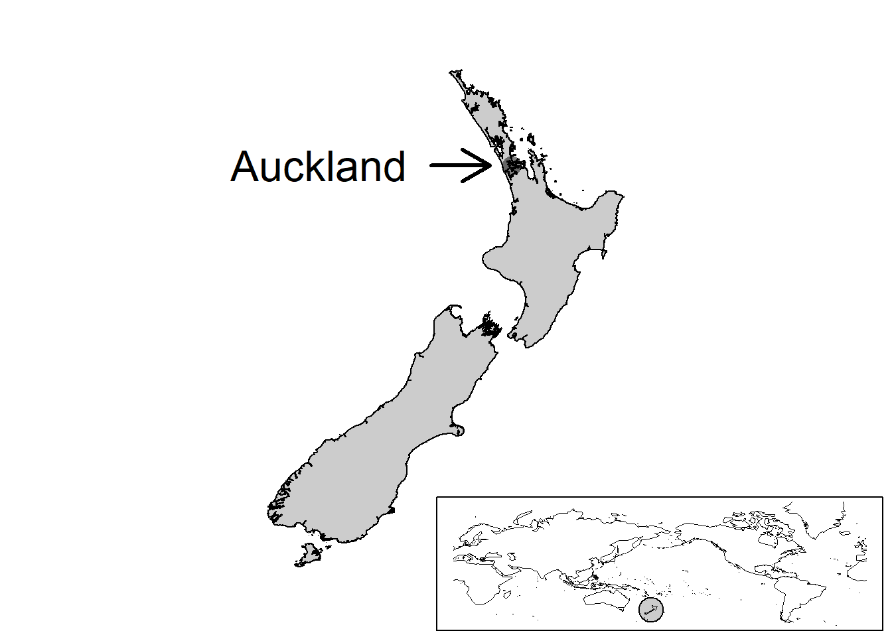
Warning: package 'quantmod' was built under R version 4.5.2Warning: package 'xts' was built under R version 4.5.2Warning: package 'zoo' was built under R version 4.5.2Warning: package 'TTR' was built under R version 4.5.2[1] "AAPL"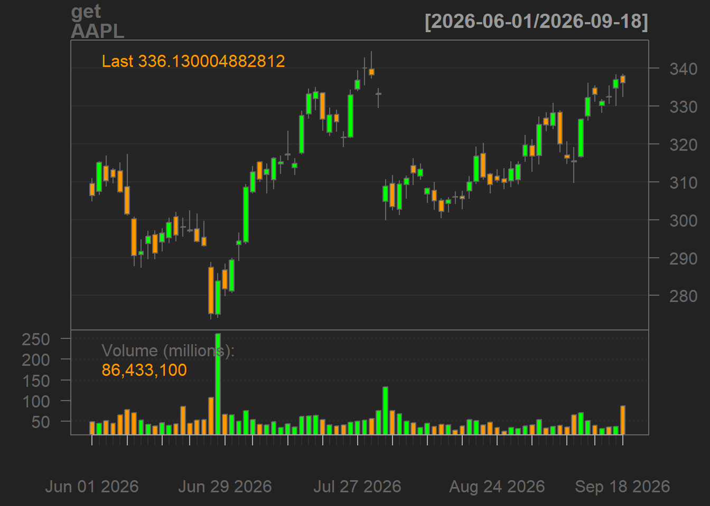
Warning: package 'party' was built under R version 4.5.3Loading required package: mvtnormWarning: package 'mvtnorm' was built under R version 4.5.3Loading required package: modeltoolsWarning: package 'modeltools' was built under R version 4.5.2Loading required package: stats4Loading required package: strucchangeWarning: package 'strucchange' was built under R version 4.5.3Loading required package: sandwichWarning: package 'sandwich' was built under R version 4.5.3Warning: package 'ipred' was built under R version 4.5.3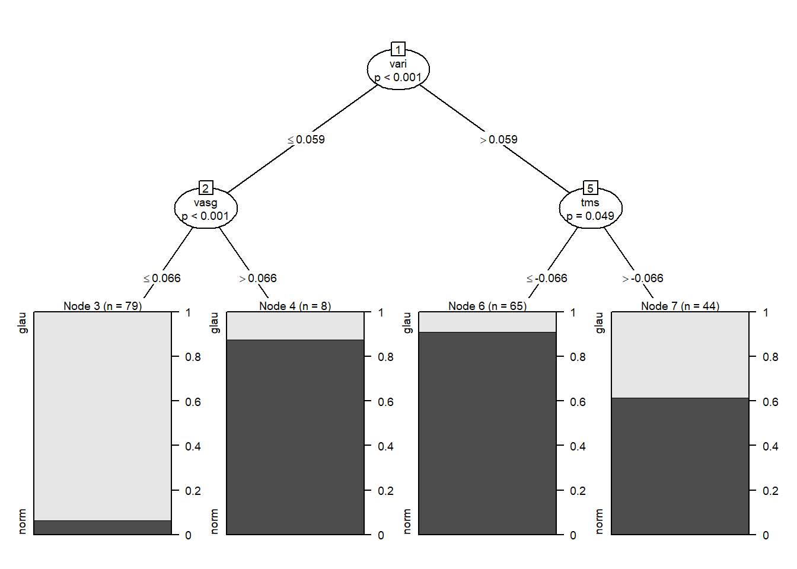
library(grid)
# Comment:
#
# Some simple ideas as a basis for meta-analysis plots.
#
# The code is modular so that something similar could be achieved
# with different data quite simply. The actual drawing for these data
# only occurs in the last 10 or so lines of code.
#
# The horizontal gap between columns with content
colgap <- unit(3, "mm")
# The data for column 1
#
# Of course, many other possible ways to represent the data
# One advantage with this way is that col1$labels can be used
# directly in the calculation of the column widths for the
# main table (see below)
#
# NOTE: textGrobs are used here so that the fontface (bold in
# some cases) is associated with the label. In this way, the
# calculation of column widths takes into account the font face.
col1 <- list(labels=
list(textGrob("Centre", x=0, just="left",
gp=gpar(fontface="bold", col="white")),
textGrob("Thailand", x=0, just="left"),
textGrob("Philippines", x=0, just="left"),
textGrob("All in situ", x=0, just="left",
gp=gpar(fontface="bold.italic")),
textGrob("Colombia", x=0, just="left"),
textGrob("Spain", x=0, just="left"),
textGrob("All invasive", x=0, just="left",
gp=gpar(fontface="bold.italic")),
textGrob("All", x=0, just="left",
gp=gpar(fontface="bold"))),
rows=c(1, 5, 6, 8, 11, 12, 14, 16))
# Labels in col 1 which are not used to calculate the
# column width (they spill over into col 2)
col1plus <- list(labels=
list(textGrob("Carcinoma in situ", x=0, just="left",
gp=gpar(fontface="bold.italic")),
textGrob("Invasive cancer", x=0, just="left",
gp=gpar(fontface="bold.italic"))),
rows=c(4, 10))
# Data for column 2
col2 <- list(labels=
list(textGrob("Cases", x=1, just="right",
gp=gpar(fontface="bold", col="white")),
textGrob("327", x=1, just="right"),
textGrob("319", x=1, just="right"),
textGrob("1462", x=1, just="right",
gp=gpar(fontface="bold")),
textGrob("96", x=1, just="right"),
textGrob("115", x=1, just="right"),
textGrob("211", x=1, just="right",
gp=gpar(fontface="bold")),
textGrob("1673", x=1, just="right",
gp=gpar(fontface="bold"))),
rows=c(1, 5, 6, 8, 11, 12, 14, 16))
# Data for column 3 (width specified as a physical size below)
col3 <- list(OR=c(0.72, 1.27, 1.17, 2.97, 1.86, 2.01, 1.20),
LL=c(0.52, 0.87, 1.03, 1.42, 0.46, 1.09, 1.07),
UL=c(1.00, 1.85, 1.32, 6.21, 7.51, 3.71, 1.35),
rows=c(5, 6, 8, 11, 12, 14, 16),
# "s" means summary, "n" means normal
type=c("n", "n", "s", "n", "n", "s", "s"))
# Sizes of boxes
information <- sqrt(1 / ((log(col3$UL) - log(col3$OR))/1.96))
col3$sizes <- information/max(information)
# Width of column 3
col3width <- unit(1.5, "inches")
# Range on the x-axis for column 3
col3$range <- c(0, 4)
# Function to draw a cell in a text column
drawLabelCol <- function(col, j) {
for (i in 1:length(col$rows)) {
pushViewport(viewport(layout.pos.row=col$rows[i], layout.pos.col=j))
# Labels are grobs containing their location so just
# have to grid.draw() them
grid.draw(col$labels[[i]])
popViewport()
}
}
# Function to draw a non-summary rect-plus-CI
drawNormalCI <- function(LL, OR, UL, size) {
# NOTE the use of "native" units to position relative to
# the x-axis scale, and "snpc" units to size relative to
# the height of the row
# ("snpc" stands for "square normalised parent coordinates"
# which means that the value is calculated as a proportion
# of the width and height of the current viewport and the
# physically smaller of these is used)
grid.rect(x=unit(OR, "native"),
width=unit(size, "snpc"), height=unit(size, "snpc"),
gp=gpar(fill="black"))
# Draw arrow if exceed col range
# convertX() used to convert between coordinate systems
if (convertX(unit(UL, "native"), "npc", valueOnly=TRUE) > 1)
grid.lines(x=unit(c(LL, 1), c("native", "npc")), y=.5,
arrow=arrow(length=unit(0.05, "inches")))
else {
# Draw line white if totally inside rect
lineCol <- if ((convertX(unit(OR, "native") + unit(0.5*size, "lines"),
"native", valueOnly=TRUE) > UL) &&
(convertX(unit(OR, "native") - unit(0.5*size, "lines"),
"native", valueOnly=TRUE) < LL))
"white"
else
"black"
grid.lines(x=unit(c(LL, UL), "native"), y=0.5,
gp=gpar(col=lineCol))
}
}
# Function to draw a summary "diamond"
drawSummaryCI <- function(LL, OR, UL, size) {
# Not sure how to calc the heights of the diamonds so
# I'm just using half the height of the equivalent rect
grid.polygon(x=unit(c(LL, OR, UL, OR), "native"),
y=unit(0.5 + c(0, 0.25*size, 0, -0.25*size), "npc"))
}
# Function to draw a "data" column
drawDataCol <- function(col, j) {
pushViewport(viewport(layout.pos.col=j, xscale=col$range))
grid.lines(x=unit(1, "native"), y=0:1)
# Assume that last value in col is "All"
grid.lines(x=unit(col$OR[length(col$OR)], "native"),
y=0:1, gp=gpar(lty="dashed"))
grid.xaxis(gp=gpar(cex=0.6))
grid.text("OR", y=unit(-2, "lines"))
popViewport()
for (i in 1:length(col$rows)) {
pushViewport(viewport(layout.pos.row=col$rows[i], layout.pos.col=j,
xscale=col$range))
if (col$type[i] == "n")
drawNormalCI(col$LL[i], col$OR[i], col$UL[i], col$sizes[i])
else
drawSummaryCI(col$LL[i], col$OR[i], col$UL[i], col$sizes[i])
popViewport()
}
}
grid.newpage()
# Draw the table
#
# The table is just a big layout
#
# All rows are the height of 1 line of text
#
# Widths of column 1 and 2 are based on widths of labels in
# col$labels and col2$labels
pushViewport(viewport(layout=grid.layout(16, 5,
widths=
unit.c(max(unit(rep(1, 8), "grobwidth", col1$labels)),
colgap,
max(unit(rep(1, 8), "grobwidth", col2$labels)),
colgap,
col3width),
heights=unit(c(1, 0, rep(1, 14)), "lines"))))
pushViewport(viewport(layout.pos.row=1))
grid.rect(gp=gpar(col=NA, fill="black"))
popViewport()
for (i in c(8, 14, 16)) {
pushViewport(viewport(layout.pos.row=i))
grid.rect(gp=gpar(col=NA, fill="gray80"))
popViewport()
}
drawLabelCol(col1, 1)
drawLabelCol(col1plus, 1)
drawLabelCol(col2, 3)
drawDataCol(col3, 5)
popViewport()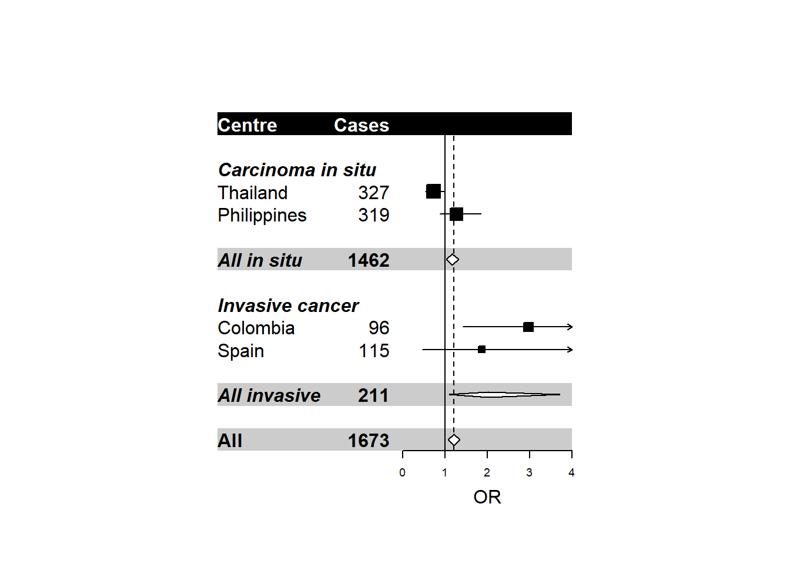
#
# Comment:
#
# Code by Arden Miller (Department of Statistics, The University of Auckland).
#
# Lots of coordinate transformations being done "by hand".
# This code is not really reusable; just a demonstration that very
# pretty results are possible if you're sufficiently keen.
#
par(mfrow=c(2, 1), pty="s", mar=rep(1, 4))
# Create plotting region and plot outer circle
plot(c(-1.1, 1.2), c(-1.1, 1.2),
type="n", xlab="", ylab="",
xaxt="n", yaxt="n", cex.lab=2.5)
angs <- seq(0, 2*pi, length=500)
XX <- sin(angs)
YY <- cos(angs)
lines(XX, YY, type="l")
# Set constants
phi1 <- pi*2/9
k1 <- sin(phi1)
k2 <- cos(phi1)
# Create gray regions
obsphi <- pi/12
lambdas <- seq(-pi, pi, length=500)
xx <- cos(pi/2 - obsphi)*sin(lambdas)
yy <- k2*sin(pi/2 - obsphi)-k1 * cos(pi/2 - obsphi)*cos(lambdas)
polygon(xx, yy, col="gray")
lines(xx, yy, lwd=2)
theta1sA <- seq(-obsphi, obsphi, length=500)
theta2sA <- acos(cos(obsphi)/cos(theta1sA))
theta1sB <- seq(obsphi, -obsphi, length=500)
theta2sB <- -acos(cos(obsphi)/cos(theta1sB))
theta1s <- c(theta1sA, theta1sB)
theta2s <- c(theta2sA, theta2sB)
xx <- cos(theta1s)*sin(theta2s+pi/4)
yy <- k2*sin(theta1s)-k1*cos(theta1s)*cos(theta2s+pi/4)
polygon(xx, yy, col="gray")
lines(xx, yy, lwd=2)
xx <- cos(theta1s)*sin(theta2s-pi/4)
yy <- k2*sin(theta1s)-k1*cos(theta1s)*cos(theta2s-pi/4)
polygon(xx, yy, col="gray")
lines(xx, yy, lwd=2)
# Plot longitudes
vals <- seq(0, 7, 1)*pi/8
for(lambda in vals){
sl <- sin(lambda)
cl <- cos(lambda)
phi <- atan(((0-1)*k2*cl)/(k1))
angs <- seq(phi, pi+phi, length=500)
xx <- cos(angs)*sl
yy <- k2*sin(angs)-k1*cos(angs)*cl
lines(xx, yy, lwd=.5)
}
# Grey out polar cap
phi <- 5.6*pi/12
lambdas <- seq(-pi, pi, length=500)
xx <- cos(phi)*sin(lambdas)
yy <- k2*sin(phi)-k1 * cos(phi)*cos(lambdas)
polygon(xx, yy, col="gray")
# Plot Latitudes
vals2 <- seq(-2.8, 5.6, 1.4)*pi/12
for(phi in vals2){
if (k1*sin(phi) > k2 * cos(phi))
crit <- pi
else
crit <- acos((-k1*sin(phi))/(k2*cos(phi)))
lambdas <- seq(-crit, crit, length=500)
xx <- cos(phi)*sin(lambdas)
yy <- k2*sin(phi)-k1 * cos(phi)*cos(lambdas)
lines(xx, yy, lwd=.5)
}
# Plots axes and label
lines(c(0.00, 0.00), c(k2*sin(pi/2), 1.11), lwd=4)
lines(c(0.00, 0.00), c(-1, -1.12), lwd=4)
a2x <- sin(-pi/4)
a2y <- cos(-pi/4)*(-k1)
lines(c(a2x, 1.5*a2x), c(a2y, 1.5*a2y), lwd=4)
k <- sqrt(a2x^2+a2y^2)
lines(c(-a2x/k, 1.2*(-a2x/k)), c(-a2y/k, 1.2*(-a2y/k)), lwd=4)
a3x <- sin(pi/4)
a3y <- cos(pi/4)*(-k1)
lines(c(a3x, 1.5*a3x), c(a3y, 1.5*a3y), lwd=4)
k <- sqrt(a3x^2+a3y^2)
lines(c(-a3x/k, 1.2*(-a3x/k)), c(-a3y/k, 1.2*(-a3y/k)), lwd=4)
text(0.1, 1.12, expression(bold(X[1])))
text(-1.07, -.85, expression(bold(X[2])))
text(1.11, -.85, expression(bold(X[3])))
# set plot region and draw outer circle
plot(c(-1.1, 1.2), c(-1.1, 1.2),
type="n", xlab="", ylab="",
xaxt="n", yaxt="n", cex.lab=2.5)
angs <- seq(0, 2*pi, length=500)
XX <- sin(angs)
YY <- cos(angs)
lines(XX, YY, type="l")
# set constants
phi1 <- pi*2/9
k1 <- sin(phi1)
k2 <- cos(phi1)
obsphi <- pi/24
# create X2X3 gray region and plot boundary
crit <- acos((-k1*sin(obsphi))/(k2 * cos(obsphi)))
lambdas <- seq(-crit, crit, length=500)
xx1 <- cos(obsphi)*sin(lambdas)
yy1 <- k2*sin(obsphi)-k1 * cos(obsphi)*cos(lambdas)
obsphi <- -pi/24
crit <- acos((-k1*sin(obsphi))/(k2 * cos(obsphi)))
lambdas <- seq(crit, -crit, length=500)
xx3 <- cos(obsphi)*sin(lambdas)
yy3 <- k2*sin(obsphi)-k1 * cos(obsphi)*cos(lambdas)
ang1 <- atan(xx1[500]/yy1[500])
ang2 <- pi+atan(xx3[1]/yy3[1])
angs <- seq(ang1, ang2, length=50)
xx2 <- sin(angs)
yy2 <- cos(angs)
ang4 <- atan(xx1[1]/yy1[1])
ang3 <- -pi+ atan(xx3[500]/yy3[500])
angs <- seq(ang3, ang4, length=50)
xx4 <- sin(angs)
yy4 <- cos(angs)
xxA <- c(xx1, xx2, xx3, xx4)
yyA <- c(yy1, yy2, yy3, yy4)
polygon(xxA, yyA, border="gray", col="gray")
xx1A <- xx1
yy1A <- yy1
xx3A <- xx3
yy3A <- yy3
# create X1X3 gray region and plot boundary
obsphi <- pi/24
crit <- pi/2-obsphi
theta1sA <- c(seq(-crit, crit/2, length=200), seq(crit/2, crit, length=500))
theta2sA <- asin(cos(crit)/cos(theta1sA))
theta1sB <- seq(crit, crit/2, length=500)
theta2sB <- pi-asin(cos(crit)/cos(theta1sB))
theta1s <- c(theta1sA, theta1sB)
theta2s <- c(theta2sA, theta2sB)
vals <- k1*sin(theta1s)+k2*cos(theta1s)*cos(theta2s+pi/4)
xx1 <- cos(theta1s[vals>=0])*sin(theta2s[vals>=0]+pi/4)
yy1 <- k2*sin(theta1s[vals>=0])-k1*cos(theta1s[vals>=0])*cos(theta2s[vals>=0]+pi/4)
theta2s <- -theta2s
vals <- k1*sin(theta1s)+k2*cos(theta1s)*cos(theta2s+pi/4)
xx3 <- cos(theta1s[vals>=0])*sin(theta2s[vals>=0]+pi/4)
yy3 <- k2*sin(theta1s[vals>=0])-k1*cos(theta1s[vals>=0])*cos(theta2s[vals>=0]+pi/4)
rev <- seq(length(xx3), 1, -1)
xx3 <- xx3[rev]
yy3 <- yy3[rev]
ang1 <- pi+atan(xx1[length(xx1)]/yy1[length(yy1)])
ang2 <- pi+atan(xx3[1]/yy3[1])
angs <- seq(ang1, ang2, length=50)
xx2 <- sin(angs)
yy2 <- cos(angs)
ang4 <- pi+atan(xx1[1]/yy1[1])
ang3 <- pi+atan(xx3[length(xx3)]/yy3[length(yy3)])
angs <- seq(ang3, ang4, length=50)
xx4 <- sin(angs)
yy4 <- cos(angs)
xxB <- c(xx1, -xx2, xx3, xx4)
yyB <- c(yy1, -yy2, yy3, yy4)
polygon(xxB, yyB, border="gray", col="gray")
xx1B <- xx1
yy1B <- yy1
xx3B <- xx3
yy3B <- yy3
# create X1X2 gray region and plot boundary
vals <- k1*sin(theta1s)+k2*cos(theta1s)*cos(theta2s-pi/4)
xx1 <- cos(theta1s[vals>=0])*sin(theta2s[vals>=0]-pi/4)
yy1 <- k2*sin(theta1s[vals>=0])-k1*cos(theta1s[vals>=0])*cos(theta2s[vals>=0]-pi/4)
theta2s <- -theta2s
vals <- k1*sin(theta1s)+k2*cos(theta1s)*cos(theta2s-pi/4)
xx3 <- cos(theta1s[vals>=0])*sin(theta2s[vals>=0]-pi/4)
yy3 <- k2*sin(theta1s[vals>=0])-k1*cos(theta1s[vals>=0])*cos(theta2s[vals>=0]-pi/4)
rev <- seq(length(xx3), 1, -1)
xx3 <- xx3[rev]
yy3 <- yy3[rev]
ang1 <- pi+atan(xx1[length(xx1)]/yy1[length(yy1)])
ang2 <- pi+atan(xx3[1]/yy3[1])
angs <- seq(ang1, ang2, length=50)
xx2 <- sin(angs)
yy2 <- cos(angs)
ang4 <- pi+atan(xx1[1]/yy1[1])
ang3 <- pi+atan(xx3[length(xx3)]/yy3[length(yy3)])
angs <- seq(ang3, ang4, length=50)
xx4 <- sin(angs)
yy4 <- cos(angs)
xx <- c(xx1, -xx2, xx3, xx4)
yy <- c(yy1, -yy2, yy3, yy4)
polygon(xx, yy, border="gray", col="gray")
xx1C <- xx1
yy1C <- yy1
xx3C <- xx3
yy3C <- yy3
# plot boundaries to gray regions
lines(xx1C[2:45], yy1C[2:45], lwd=2)
lines(xx1C[69:583], yy1C[69:583], lwd=2)
lines(xx1C[660:1080], yy1C[660:1080], lwd=2)
lines(xx3C[13:455], yy3C[13:455], lwd=2)
lines(xx3C[538:1055], yy3C[538:1055], lwd=2)
lines(xx3C[1079:1135], yy3C[1079:1135], lwd=2)
lines(xx1A[6:113], yy1A[6:113], lwd=2)
lines(xx1A[153:346], yy1A[153:346], lwd=2)
lines(xx1A[389:484], yy1A[389:484], lwd=2)
lines(xx3A[1:93], yy3A[1:93], lwd=2)
lines(xx3A[140:362], yy3A[140:362], lwd=2)
lines(xx3A[408:497], yy3A[408:497], lwd=2)
lines(xx1B[2:45], yy1B[2:45], lwd=2)
lines(xx1B[69:583], yy1B[69:583], lwd=2)
lines(xx1B[660:1080], yy1B[660:1080], lwd=2)
lines(xx3B[13:455], yy3B[13:455], lwd=2)
lines(xx3B[538:1055], yy3B[538:1055], lwd=2)
lines(xx3B[1079:1135], yy3B[1079:1135], lwd=2)
# Plot longitudes
vals <- seq(-7, 8, 1)*pi/8
for(lambda in vals){
sl <- sin(lambda)
cl <- cos(lambda)
phi <- atan(((0-1)*k2*cl)/(k1))
angs <- seq(phi, 5.6*pi/12, length=500)
xx <- cos(angs)*sl
yy <- k2*sin(angs)-k1*cos(angs)*cl
lines(xx, yy, lwd=.5)
}
# Plot Latitudes
# vals2 <- seq(-2.8, 5.6, 1.4)*pi/12
vals2 <- c(-1.5, 0, 1.5, 3.0, 4.5, 5.6)*pi/12
for(phi in vals2){
if (k1*sin(phi) > k2 * cos(phi))
crit <- pi
else
crit <- acos((-k1*sin(phi))/(k2*cos(phi)))
lambdas <- seq(-crit, crit, length=500)
xx <- cos(phi)*sin(lambdas)
yy <- k2*sin(phi)-k1 * cos(phi)*cos(lambdas)
lines(xx, yy, lwd=.5)
}
# create lines for X1X2- and X1X3-planes
lambda <- pi/4
sl <- sin(lambda)
cl <- cos(lambda)
phi <- atan(((0-1)*k2*cl)/(k1))
angs <- seq(phi, pi+phi, length=500)
xx <- cos(angs)*sl
yy <- k2*sin(angs)-k1*cos(angs)*cl
lines(xx, yy, lwd=2)
lambda <- 3*pi/4
sl <- sin(lambda)
cl <- cos(lambda)
phi <- atan(((0-1)*k2*cl)/(k1))
angs <- seq(phi, pi+phi, length=500)
xx <- cos(angs)*sl
yy <- k2*sin(angs)-k1*cos(angs)*cl
lines(xx, yy, lwd=2)
# create line for X2X3-plane
phi <- 0
crit <- acos((-k1*sin(phi))/(k2 * cos(phi)))
lambdas <- seq(-crit, crit, length=500)
xx <- cos(phi)*sin(lambdas)
yy <- k2*sin(phi)-k1 * cos(phi)*cos(lambdas)
lines(xx, yy, lwd=2)
# create axes
lines(c(0.00, 0.00), c(k2*sin(pi/2), 1.11), lwd=4)
lines(c(0.00, 0.00), c(-1, -1.12), lwd=4)
a2x <- sin(-pi/4)
a2y <- cos(-pi/4)*(-k1)
lines(c(a2x, 1.5*a2x), c(a2y, 1.5*a2y), lwd=4)
a3x <- sin(pi/4)
a3y <- cos(pi/4)*(-k1)
lines(c(a3x, 1.5*a3x), c(a3y, 1.5*a3y), lwd=4)
k <- sqrt(a3x^2+a3y^2)
lines(c(-a3x/k, 1.2*(-a3x/k)), c(-a3y/k, 1.2*(-a3y/k)), lwd=4)
k <- sqrt(a2x^2+a2y^2)
lines(c(-a2x/k, 1.2*(-a2x/k)), c(-a2y/k, 1.2*(-a2y/k)), lwd=4)
# add text
text(-1.07, -.85, expression(bold(X[2])))
text(1.11, -.85, expression(bold(X[3])))
text(0.1, 1.12, expression(bold(X[1])))
lines(XX, YY, type="l")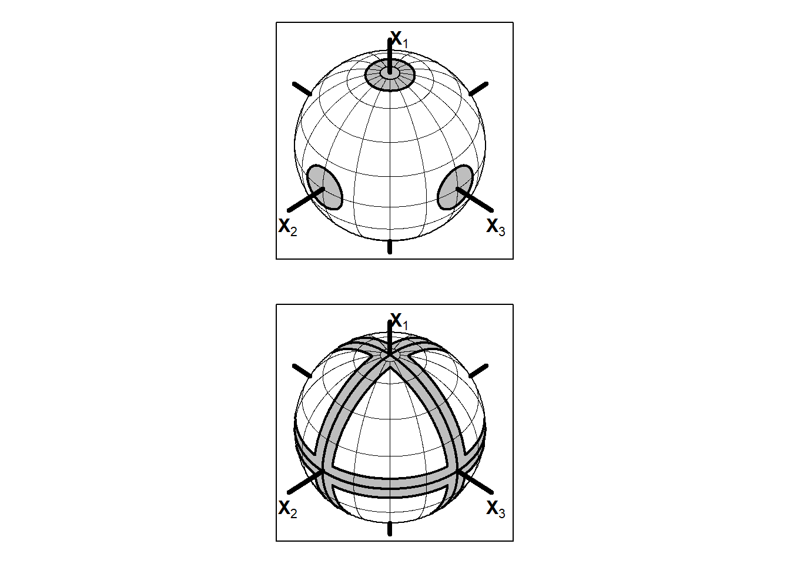
uoaBlue <- "#00467f"
library(colorspace)
uoaLCH <- colorspace::coords(as(colorspace::hex2RGB(uoaBlue), "polarLUV"))
hues <- c(uoaLCH[3], uoaLCH[3] + 90, uoaLCH[3] + 180, uoaLCH[3] + 270)
darks <- hcl(hues, uoaLCH[2], uoaLCH[1])
lights <- hcl(hues, uoaLCH[2], 80)
arr <- arrow(length=unit(2, "mm"), type="closed")
document <- function(label, x=.5, y=.5,
w=unit(2, "cm"), h=unit(3, "cm"), d=unit(6, "mm"),
ann=TRUE, border=NA, fill=NULL, name="script") {
if (is.null(fill)) {
fill=lights[1]
}
pushViewport(viewport(x, y, w, h, name="scriptvp"))
grid.polygon(unit.c(unit(0, "npc"),
unit(0, "npc"),
unit(1, "npc"),
unit(1, "npc"),
d,
d,
unit(0, "npc")),
unit.c(unit(1, "npc") - d,
unit(0, "npc"),
unit(0, "npc"),
unit(1, "npc"),
unit(1, "npc"),
unit(1, "npc") - d,
unit(1, "npc") - d),
gp=gpar(col=border, fill=fill),
name=name)
grid.polygon(unit.c(unit(0, "npc"),
d,
d),
unit.c(unit(1, "npc") - d,
unit(1, "npc") - d,
unit(1, "npc")),
gp=gpar(col=NA, fill=darks[1]))
grid.text(label)
if (ann) {
grid.rect(y=0, height=unit(2, "lines"), just="top",
gp=gpar(col=NA, fill=darks[1]))
grid.segments(0, 0, 1, 0, gp=gpar(col="white", lwd=2))
grid.text("SCRIPT", gp=gpar(col="white"),
y=unit(-1, "lines"))
}
upViewport()
}
module <- function(label, nin, nout,
x=.5, y=.5, w=unit(3, "cm"), h=unit(4, "cm"),
ann=TRUE, border=NA,
labelin=TRUE, labelout=TRUE, inoutext=.2,
arrowsin=TRUE, arrowsout=TRUE) {
pushViewport(viewport(x, y, w, h, name="modulevp"))
grid.rect(gp=gpar(col=border,
fill=lights[2]))
document(label, ann=FALSE, border=darks[1], name=label)
if (arrowsin) {
arrin <- arr
} else {
arrin <- NULL
}
if (arrowsout) {
arrout <- arr
} else {
arrout <- NULL
}
if (nin > 0) {
grid.segments(-inoutext, 1:nin/(nin+1),
grobX(rectGrob(vp="scriptvp"), 180), 1:nin/(nin+1),
gp=gpar(lwd=3, col="black"), arrow=arrin)
if (is.character(labelin)) {
lab <- labelin
fam <- "mono"
} else if (labelin) {
lab <- "IN"
fam <- "sans"
} else {
lab <- NULL
}
if (!is.null(lab)) {
grid.text(lab, unit(-inoutext, "npc") - unit(2, "mm"),
1:nin/(nin+1),
just="right", gp=gpar(cex=.7, fontfamily=fam))
}
}
if (nout > 0) {
grid.segments(grobX(rectGrob(vp="scriptvp"), 0),
1:nout/(nout+1), 1 + inoutext, 1:nout/(nout+1),
gp=gpar(lwd=3, col="black"), arrow=arrout)
if (is.character(labelout)) {
lab <- labelout
fam <- "mono"
} else if (labelout) {
lab <- "OUT"
fam <- "sans"
} else {
lab <- NULL
}
if (!is.null(lab)) {
grid.text(lab, unit(1 + inoutext, "npc") + unit(2, "mm"),
1:nout/(nout+1),
just="left", gp=gpar(cex=.7, fontfamily=fam))
}
}
if (ann) {
grid.rect(y=0, height=unit(2, "lines"), just="top",
gp=gpar(col=NA, fill=darks[2]))
grid.segments(0, 0, 1, 0, gp=gpar(col="white", lwd=2))
grid.text("MODULE", gp=gpar(col="white"),
y=unit(0, "npc") - unit(1, "lines"))
}
upViewport()
}
pipeline <- function(x=.5, y=.5, width=unit(10, "cm"), height=unit(6, "cm"),
modules=TRUE) {
pushViewport(viewport(x, y, width=width, height=height,
name="pipelinevp"))
grid.rect(gp=gpar(col=NA, fill=lights[4]))
if (modules) {
module("R", 1, 2, x=1/4, labelout=FALSE, inoutext=.5, arrowsout=FALSE,
ann=FALSE, border=darks[2])
module("Python", 2, 1, x=3/4, labelin=FALSE, inoutext=.5,
ann=FALSE, border=darks[2])
}
grid.rect(y=0, height=unit(2, "lines"), just="top",
# gp=gpar(col=NA, fill=hcl(hue, sat, 40, trans)))
gp=gpar(col=NA, fill=darks[4]))
grid.segments(0, 0, 1, 0, gp=gpar(col="white", lwd=2))
grid.text("PIPELINE", gp=gpar(col="white"),
y=unit(0, "npc") - unit(1, "lines"))
upViewport()
}
grid.newpage()
pipeline(modules=FALSE, width=unit(10, "cm"), height=unit(10, "cm"))
downViewport("pipelinevp")
# Module 1
module("R", 0, 0, x=.2, labelin=FALSE, labelout=FALSE,
ann=FALSE, border=darks[2])
downViewport("scriptvp")
# inputs
document(".csv", x=-.95, y=.4,
w=unit(1, "cm"), h=unit(1.5, "cm"), d=unit(3, "mm"),
ann=FALSE, border="black", fill="grey80")
grid.segments(-.55, .4, 0, .4, arrow=arr, gp=gpar(lwd=3))
# outputs
grid.curve(1, .7, 1.6, .9, arrow=arr, gp=gpar(lwd=3))
grid.rect(x=1.6, y=1.05, width=unit(1, "cm"), height=unit(1, "lines"),
gp=gpar(fill="black"))
grid.text("01011", x=1.6, y=1.05,
gp=gpar(cex=.7, fontfamily="mono", col="white"))
upViewport(2) # script
# MARK
memtopx <- convertX(grobX(nullGrob(x=1.6, y=1.2, vp=vpPath("modulevp", "scriptvp")), 0),
"in")
memtopy <- convertY(grobY(nullGrob(x=1.6, y=1.2, vp=vpPath("modulevp", "scriptvp")), 0),
"in")
csvbotx <- convertX(grobX(nullGrob(x=1.9, y=-.5, vp=vpPath("modulevp", "scriptvp")), 0),
"in")
csvboty <- convertY(grobY(nullGrob(x=1.9, y=-.5, vp=vpPath("modulevp", "scriptvp")), 0),
"in")
downViewport("scriptvp")
grid.curve(1, .3, 1.9, .1, curv=-1, arrow=arr, gp=gpar(lwd=3))
document(".csv", x=1.9, y=-.2,
w=unit(1, "cm"), h=unit(1.5, "cm"), d=unit(3, "mm"),
ann=FALSE, border="black", fill="grey80")
upViewport(2) # script
# Module 2
module("R", 0, 0, x=.65, y=.75, labelin=FALSE, labelout=FALSE,
ann=FALSE, border=darks[2])
grid.curve(memtopx, memtopy,
grobX(rectGrob(vp=vpPath("modulevp", "scriptvp")), 180),
grobY(rectGrob(vp=vpPath("modulevp", "scriptvp")), 180),
curv=-1, arrow=arr, gp=gpar(lwd=3))
downViewport("scriptvp")
grid.curve(1, .7, 1.75, .5, curv=-1, arrow=arr, gp=gpar(lwd=3))
document(".xml", x=1.75, y=.2,
w=unit(1, "cm"), h=unit(1.5, "cm"), d=unit(3, "mm"),
ann=FALSE, border="black", fill="grey80")
grid.curve(1.75, -.1, .2, -.5, curv=-1, inflect=TRUE, gp=gpar(lwd=3))
upViewport(2) # script
# MARK
curvex <- convertX(grobX(nullGrob(x=.2, y=-.5, vp=vpPath("modulevp", "scriptvp")), 0),
"in")
curvey <- convertY(grobY(nullGrob(x=.2, y=-.5, vp=vpPath("modulevp", "scriptvp")), 0),
"in")
# Module 3
module("Python", 0, 0, x=.8, y=.25, labelin=FALSE, labelout=FALSE,
ann=FALSE, border=darks[2])
grid.curve(csvbotx, csvboty,
grobX(rectGrob(vp=vpPath("modulevp", "scriptvp")), 220),
grobY(rectGrob(vp=vpPath("modulevp", "scriptvp")), 220),
curv=1, arrow=arr, gp=gpar(lwd=3))
grid.curve(curvex, curvey,
grobX(rectGrob(vp=vpPath("modulevp", "scriptvp")), 160),
grobY(rectGrob(vp=vpPath("modulevp", "scriptvp")), 160),
curv=1, arrow=arr, gp=gpar(lwd=3))
downViewport("scriptvp")
grid.segments(1, .4, 1.55, .4, arrow=arr, gp=gpar(lwd=3))
document(".pdf", x=1.95, y=.4,
w=unit(1, "cm"), h=unit(1.5, "cm"), d=unit(3, "mm"),
ann=FALSE, border="black", fill="grey80")
upViewport(2) # script
upViewport() # pipeline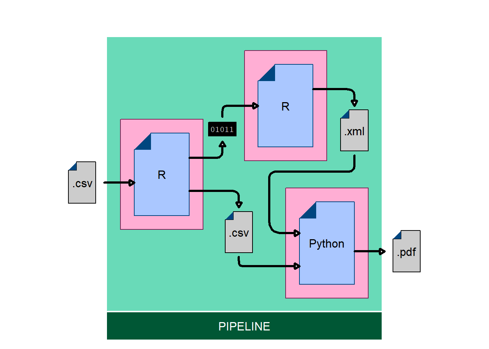
library(grid)
library(jpeg)
pic <- jpeg::readJPEG(
system.file("extra", "AfterTheBombs.jpg", package = "RGraphics")
)
w <- 1024 # 578
h <- 768 # 500
bg <- pic # [1:h, (1024 - w):1024]
unknown <- 8.7
total <- 9.1
known <- total - unknown
theta0 <- pi/4
thetaN <- theta0 + 2*pi*unknown/total
theta <- seq(theta0, thetaN, length.out = 100)
x <- 0.3*c(0, cos(theta)) + 0.5
y <- 0.3*c(0, sin(theta)) + 0.35
grid.newpage()
grid.raster(bg)
pushViewport(
viewport(
width = unit(1, "snpc"),
height = unit(1, "snpc"),
gp = gpar(cex = 1.2)
)
)
# Pie chart
grid.polygon(
x, y,
gp = gpar(
col = NA,
fill = rgb(.67, 0, .11, .7)
)
)
# UNACCOUNTED FOR label
label1 <- textGrob(
"UNACCOUNTED\nFOR",
unit(.24, "npc") - unit(2, "mm"),
unit(.6, "npc") + unit(2, "mm"),
gp = gpar(cex = 0.68, fontface = "bold"),
just = c("right", "bottom")
)
grid.rect(
.24, .6,
just = c("right", "bottom"),
width = grobWidth(label1) + unit(2, "mm"),
height = grobHeight(label1) + unit(2, "mm"),
gp = gpar(
col = NA,
fill = rgb(1, 1, 1, .5)
)
)
grid.draw(label1)
# ACCOUNTED FOR label
label2 <- textGrob(
"ACCOUNTED\nFOR",
unit(.76, "npc") + unit(2, "mm"),
unit(.6, "npc") + unit(2, "mm"),
gp = gpar(cex = 0.68, fontface = "bold"),
just = c("left", "bottom")
)
grid.rect(
.76, .6,
just = c("left", "bottom"),
width = grobWidth(label2) + unit(2, "mm"),
height = grobHeight(label2) + unit(2, "mm"),
gp = gpar(
col = NA,
fill = rgb(1, 1, 1, .5)
)
)
grid.draw(label2)
# Arrows from white labels to pie chart
grid.segments(
x0 = c(.24, .76),
y0 = c(.56, .56),
x1 = c(.36, .64),
y1 = c(.46, .46),
gp = gpar(
col = "black",
fill = "black",
lty = 1,
lwd = 2
),
arrow = arrow(
length = unit(3, "mm"),
type = "closed",
ends = "last"
)
)
# Small black information box at top-left
pushViewport(
viewport(
x = 0.08,
y = 0.99,
just = c("left", "top"),
width = 0.56,
height = 0.20,
clip = "on"
)
)
# Black box
grid.rect(
gp = gpar(
fill = "black",
col = NA
)
)
# Heading
grid.text(
"That's 96 Percent",
x = 0.05,
y = 0.84,
just = "left",
gp = gpar(
fontface = "bold",
col = "white",
cex = 0.55
)
)
# Divider line
grid.segments(
x0 = 0.05,
x1 = 0.95,
y0 = 0.67,
y1 = 0.67,
gp = gpar(
col = "grey50",
lwd = 1
)
)
# Description
grid.text(
"The Department of Defense is unable to account for the use of
$8.7 billion of the $9.1 billion it spent on
reconstruction in Iraq",
x = 0.05,
y = 0.39,
just = c("left", "center"),
gp = gpar(
col = "white",
cex = 0.31
)
)
popViewport(2)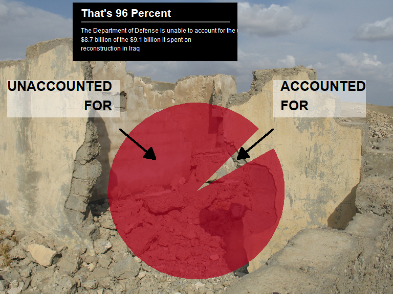
library(grid)
# Smaller nodes
size <- unit(.25, "in")
node <- function(text, x, y, fill="grey") {
grid.circle(
x, y, r=size,
gp=gpar(fill=fill),
name=text
)
grid.text(
text, x, y,
gp=gpar(cex=.55)
)
}
edge <- function(from, fangle, to, tangle, ends="last") {
grid.segments(
grobX(from, fangle), grobY(from, fangle),
grobX(to, tangle), grobY(to, tangle),
arrow=arrow(
angle=15,
length=unit(2, "mm"),
type="closed",
ends=ends
),
gp=gpar(
col="grey50",
fill="black",
lwd=.8
)
)
}
curve <- function(from, fangle, to, tangle, curv, ends="last") {
x1 <- convertX(grobX(from, fangle), "in")
y1 <- convertY(grobY(from, fangle), "in")
x2 <- convertX(grobX(to, tangle), "in")
y2 <- convertY(grobY(to, tangle), "in")
grid.curve(
x1, y1, x2, y2,
curvature=curv,
ncp=5,
square=FALSE,
arrow=arrow(
angle=15,
length=unit(2, "mm"),
type="closed",
ends=ends
),
gp=gpar(
col="grey50",
fill="black",
lwd=.8
)
)
}
grid.newpage()
# Make the entire network smaller and centered
pushViewport(
viewport(
x=.5,
y=.5,
width=.72,
height=.72
)
)
node("grDevices", .5, 3/5)
node("graphics", .5, 4/5)
node("grid", .5, 2/5)
node("lattice", 2/5, 1/5)
node("ggplot2", 3/5, 1/5)
node("grImport", 1/5, 3/5, fill="white")
node("grImport2", 1/5, 1.5/5, fill="white")
node("gridBase", 3.5/5, 3/5, fill="white")
node("gridGraphics", 4.5/5, 2.5/5, fill="white")
node("gridSVG", 4/5, 1.5/5, fill="white")
edge("grDevices", 90, "graphics", 270)
edge("grDevices", 270, "grid", 90)
edge("grid", 240, "lattice", 70)
edge("grid", 300, "ggplot2", 110)
edge("grImport2", 20, "grid", 200)
edge("grid", 340, "gridSVG", 160)
edge("grImport", 35, "graphics", 215)
edge("grImport", 325, "grid", 145)
edge("grid", 45, "gridBase", 225, ends="both")
edge("graphics", 315, "gridBase", 135, ends="both")
edge("gridGraphics", 190, "grid", 10)
curve("graphics", 20, "gridGraphics", 90, -.5)
popViewport()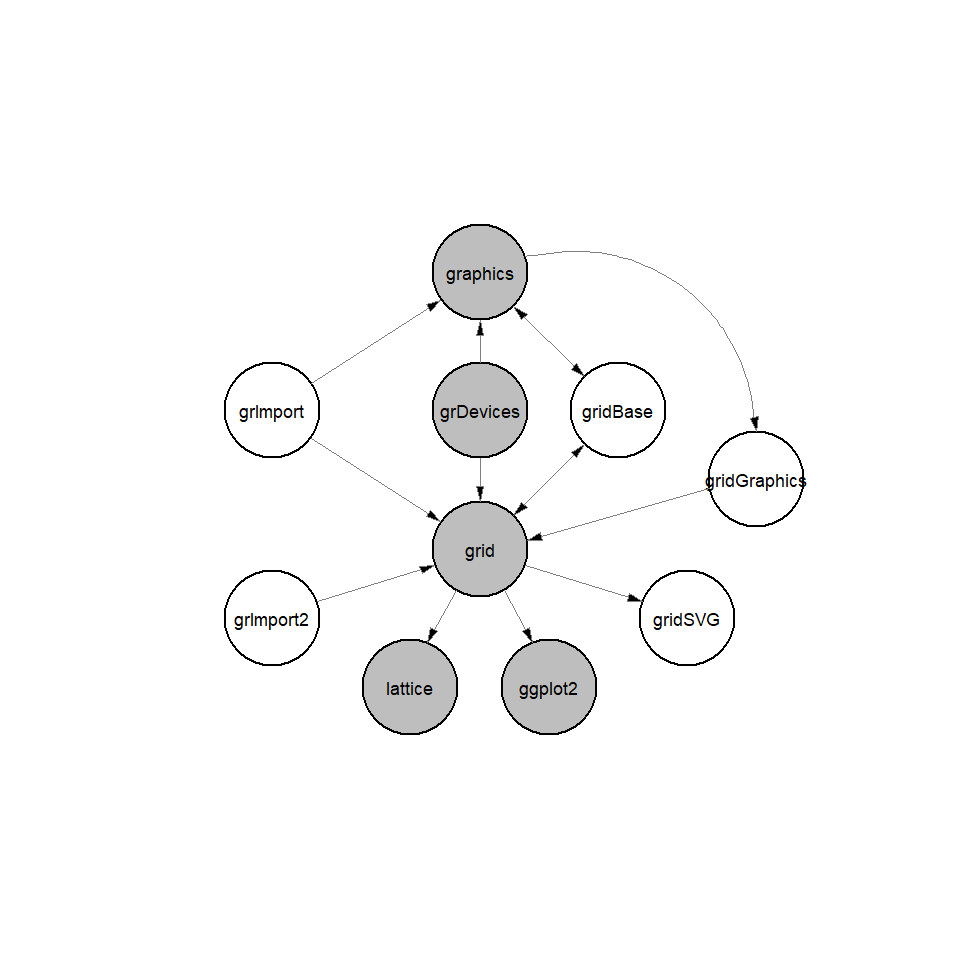
I use each against my own data. I produce one figure per function, and one sentence saying what it controls.
# U.S. annual births, 2018-2024
year <- 2018:2024
births <- c(
3791712,
3747540,
3613647,
3664292,
3667758,
3596017,
3628934
)
par(mar = c(6, 8, 4, 2))
plot(
year,
births,
type = "b",
xlab = "Year",
ylab = "",
main = "Annual Births in the United States",
las = 1
)
mtext(
"Number of Births",
side = 2,
line = 5,
cex = 1
)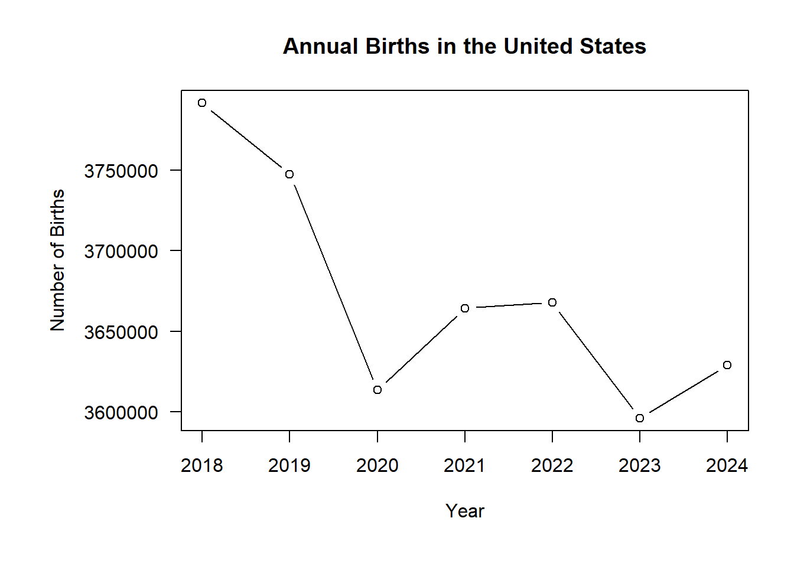
# Global industrial robot installations
year <- c(2022, 2023, 2024)
robots <- c(
553052,
541302,
542000
)
# Give extra space on the left for the y-axis title
par(mar = c(5, 8, 4, 2))
# Create the base plot
plot(
x = year,
y = robots,
type = "b",
axes = FALSE,
xlab = "Year",
ylab = "",
main = "Global Industrial Robot Installations",
pch = 16,
lwd = 2
)
# Add x-axis
axis(
side = 1,
at = year,
labels = year,
cex.axis = 0.9
)
# Add y-axis
axis(
side = 2,
las = 1,
cex.axis = 0.8
)
# Add y-axis title farther away from the numbers
mtext(
"Number of Industrial Robots Installed",
side = 2,
line = 5,
cex = 0.9
)
# Add customized border around the plotting area
box(
col = "red",
lwd = 2,
lty = "dashed"
)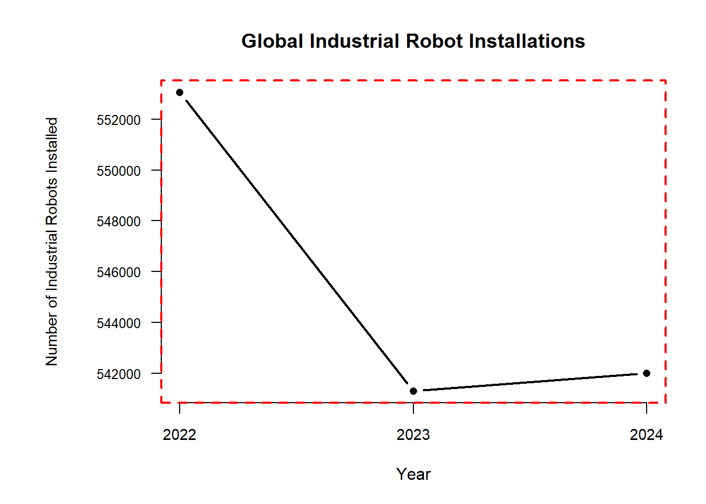
# State-based conflicts worldwide
year <- c(2023, 2024, 2025)
conflicts <- c(59, 61, 65)
# Give the left side extra space
par(mar = c(5, 8, 4, 2))
# Create plot without default axes
plot(
year,
conflicts,
type = "b",
axes = FALSE,
xlab = "Year",
ylab = "",
main = "State-Based Conflicts Worldwide"
)
# Custom X-axis
axis(
side = 1,
at = year,
labels = year
)
# Custom Y-axis
axis(
side = 2,
at = seq(55, 70, by = 5),
las = 1
)
# Y-axis title farther away from the numbers
mtext(
"Number of State-Based Conflicts",
side = 2,
line = 5,
cex = 0.9
)
# Surrounding frame
box()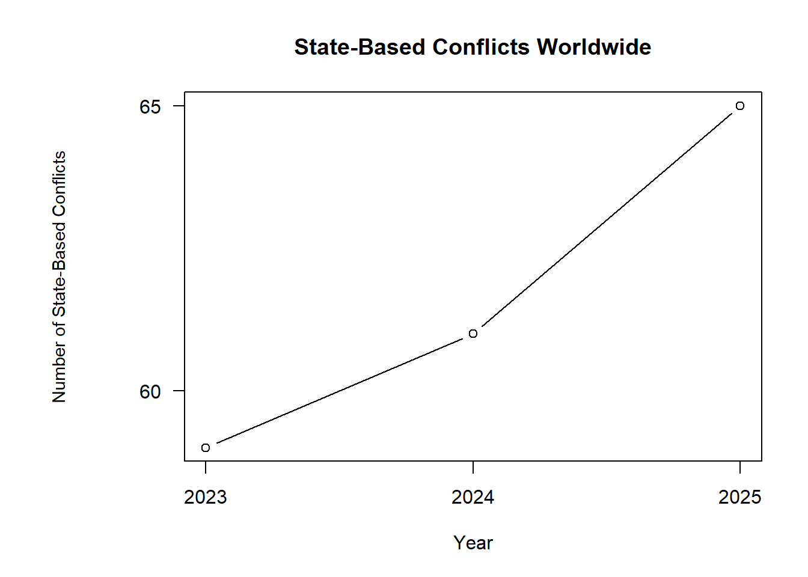
# Global annual deaths from major diseases, in millions
disease_deaths <- c(
8.88, # Ischaemic heart disease
6.19, # Stroke
3.22, # COPD
2.59, # Lower respiratory infections
1.76, # Trachea, bronchus and lung cancers
1.59, # Alzheimer's disease and other dementias
1.49, # Diabetes mellitus
1.45 # Diarrhoeal diseases
)
# Give extra space on the left
par(mar = c(5, 7, 4, 2))
# Histogram
hist(
disease_deaths,
breaks = 5,
main = "Distribution of Global Deaths from Major Diseases",
xlab = "Annual Deaths (Millions)",
ylab = "",
col = "gray80"
)
# Move y-axis title away from the numbers
mtext(
"Frequency",
side = 2,
line = 5,
cex = 0.9
)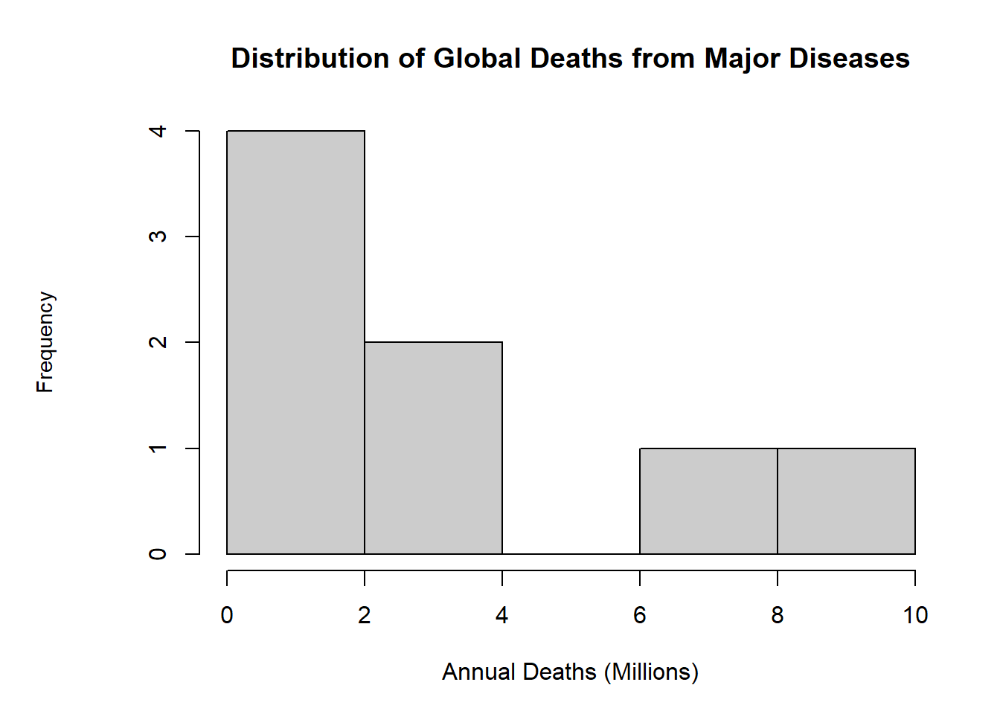
# Load real annual global CO2 emissions data
co2_data <- read.csv(
"https://ourworldindata.org/grapher/annual-co2-emissions-per-country.csv"
)
# Keep World data from 2000-2024
world_co2 <- subset(
co2_data,
Entity == "World" & Year >= 2000 & Year <= 2024
)
# Convert emissions from tonnes to billions of tonnes
co2_emissions <- world_co2[[4]] / 1000000000
# Give more space on the left
par(mar = c(5, 8, 4, 2))
# Generate boxplot
boxplot(
co2_emissions,
main = "Distribution of Global CO2 Emissions, 2000-2024",
ylab = "",
col = "skyblue"
)
# Put y-axis title farther away
mtext(
"Annual CO2 Emissions (Billion Tonnes)",
side = 2,
line = 5,
cex = 0.9
)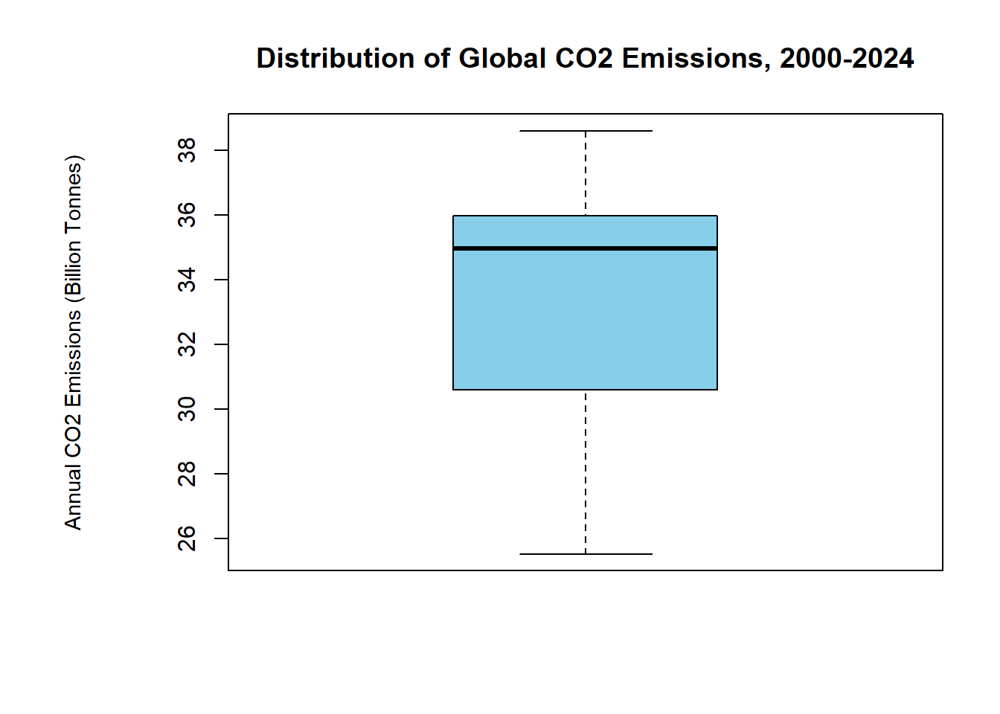
# 1. Define the mathematical function
sinc_surface <- function(x, y) {
r <- sqrt(x^2 + y^2)
# sin(r)/r is undefined at r = 0,
# but its limit at 0 is 1
z <- ifelse(r == 0, 1, sin(r) / r)
return(z)
}
# 2. Generate evenly spaced sequences for X and Y
x <- seq(-10, 10, length.out = 40)
y <- seq(-10, 10, length.out = 40)
# 3. Compute the Z height matrix
z <- outer(x, y, sinc_surface)
# 4. Create colors based on height
zfacet <- (
z[-1, -1] +
z[-nrow(z), -1] +
z[-1, -ncol(z)] +
z[-nrow(z), -ncol(z)]
) / 4
palette <- hcl.colors(100, "Viridis")
color_index <- cut(
zfacet,
breaks = 100,
labels = FALSE,
include.lowest = TRUE
)
surface_colors <- matrix(
palette[color_index],
nrow = nrow(z) - 1
)
# 5. Generate the 3D perspective plot
persp(
x,
y,
z,
theta = 35,
phi = 25,
expand = 0.7,
col = surface_colors,
shade = 0.3,
ticktype = "detailed",
xlab = "X",
ylab = "Y",
zlab = "Z",
main = expression(
z == frac(sin(r), r) ~ "," ~ r == sqrt(x^2 + y^2)
)
)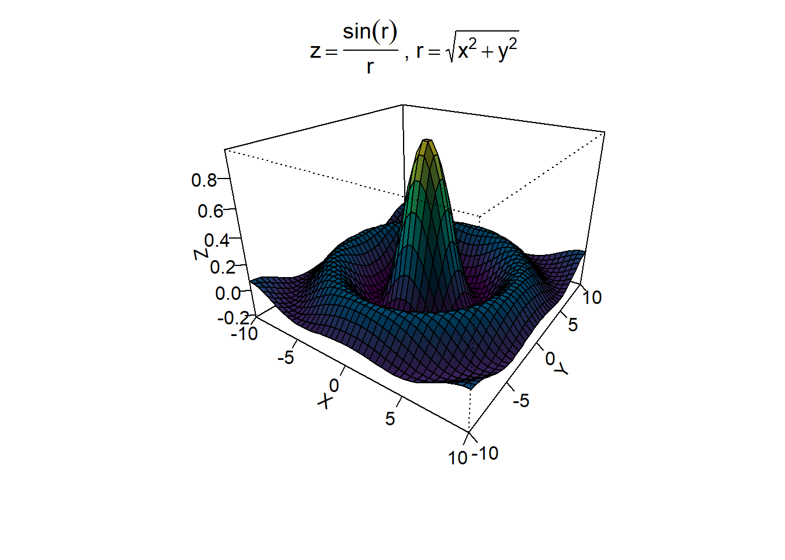
# Use real New York air-quality data
air_data <- subset(
airquality,
!is.na(Ozone) & !is.na(Temp)
)
# Identify high-ozone observations
high_ozone <- subset(
air_data,
Ozone > 100
)
# Give extra space for the y-axis title
par(mar = c(5, 8, 4, 2))
# 1. Create the base scatter plot
plot(
air_data$Temp,
air_data$Ozone,
main = "Highlighting High Ozone Levels",
xlab = "Temperature (°F)",
ylab = "",
pch = 16,
col = "gray"
)
# Y-axis title farther away
mtext(
"Ozone Level",
side = 2,
line = 5,
cex = 0.9
)
# 2. Highlight observations where ozone is above 100
points(
high_ozone$Temp,
high_ozone$Ozone,
pch = 21,
col = "black",
bg = "red",
cex = 2
)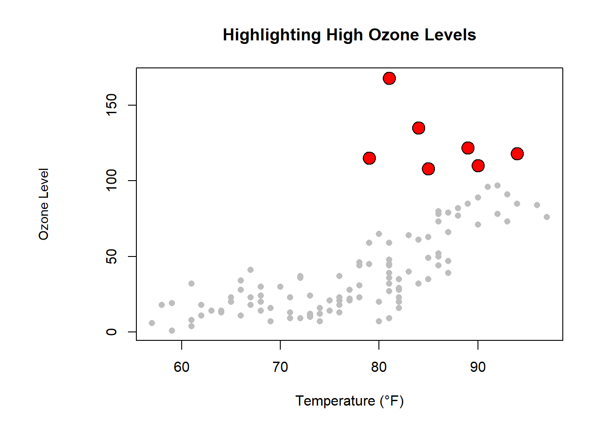
# Match minutes
minute <- c(0, 8, 24, 41, 47, 58, 67, 73, 81, 86, 92)
# Manchester City cumulative actual goals
city_score <- c(0, 0, 1, 1, 1, 2, 2, 3, 4, 4, 5)
# Manchester City cumulative expected goals (xG)
city_xg <- c(
0.00, 0.15, 0.85, 1.10, 1.25,
1.95, 2.10, 2.65, 3.20, 3.30, 4.10
)
# Sunderland cumulative actual goals
sunderland_score <- c(0, 0, 0, 1, 1, 1, 2, 2, 2, 3, 3)
# Sunderland cumulative expected goals (xG)
sunderland_xg <- c(
0.00, 0.05, 0.12, 0.55, 0.60,
0.72, 1.15, 1.20, 1.35, 1.85, 1.90
)
# Give extra space on the left
par(mar = c(5, 8, 4, 2))
# Create base plot
plot(
minute,
city_score,
type = "s",
col = "blue",
lwd = 2,
xlab = "Match Minutes",
ylab = "",
main = "Match Progression & Expected Goals (xG)",
xlim = c(0, 95),
ylim = c(0, 5.2),
axes = FALSE,
cex.lab = 0.85,
cex.axis = 0.8,
cex.main = 0.9
)
# Custom axes
axis(
side = 1,
at = seq(0, 95, by = 5),
cex.axis = 0.8
)
axis(
side = 2,
at = seq(0, 5, by = 1),
las = 1,
cex.axis = 0.8
)
# Y-axis title farther away from numbers
mtext(
"Cumulative Value (Goals / xG)",
side = 2,
line = 5,
cex = 0.8
)
# Light grid
abline(
h = seq(0, 5, by = 0.5),
v = seq(0, 95, by = 5),
col = "gray90",
lty = 1
)
# Redraw Man City actual score
lines(
minute,
city_score,
type = "s",
col = "blue",
lwd = 2
)
# Add Man City cumulative xG
lines(
minute,
city_xg,
type = "l",
col = "darkorange",
lwd = 2,
lty = 2
)
# Add Sunderland actual score
lines(
minute,
sunderland_score,
type = "s",
col = "purple",
lwd = 2
)
# Add Sunderland cumulative xG
lines(
minute,
sunderland_xg,
type = "l",
col = "deeppink",
lwd = 2,
lty = 2
)
# Mark Man City goals
points(
c(24, 58, 73, 81, 92),
c(1, 2, 3, 4, 5),
pch = 16,
col = "blue"
)
# Mark Sunderland goals
points(
c(41, 67, 86),
c(1, 2, 3),
pch = 16,
col = "purple"
)
# Smaller annotations
text(
24, 1,
"Man City Goal 24' (1-0)",
pos = 3,
cex = 0.55
)
text(
41, 1,
"Sunderland Equalizer 41' (1-1)",
pos = 1,
cex = 0.55
)
text(
81, 4,
"Late Breakout Phase",
pos = 3,
cex = 0.55
)
# Smaller legend
legend(
"topleft",
legend = c(
"Man City Actual Score",
"Man City Cumulative xG",
"Sunderland Actual Score",
"Sunderland Cumulative xG"
),
col = c(
"blue",
"darkorange",
"purple",
"deeppink"
),
lty = c(1, 2, 1, 2),
lwd = 2,
bty = "n",
cex = 0.6
)
box()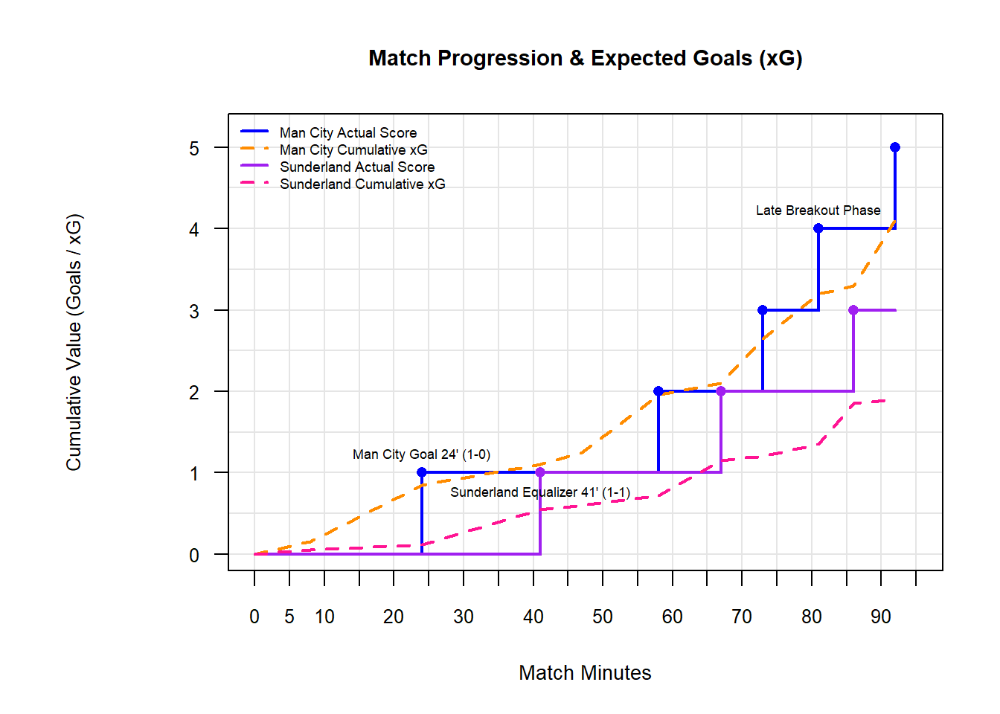
# Use real data from the built-in mtcars dataset
x <- mtcars$wt
y <- mtcars$mpg
# Calculate mean and standard deviation of MPG
mean_mpg <- mean(y)
sd_mpg <- sd(y)
# Give extra space for y-axis title
par(mar = c(5, 8, 4, 2))
# 1. Create basic scatter plot
plot(
x,
y,
main = "Vehicle Weight and Fuel Efficiency",
xlab = "Vehicle Weight (1,000 lbs)",
ylab = "",
pch = 16
)
# Y-axis title farther away from axis numbers
mtext(
"Fuel Efficiency (MPG)",
side = 2,
line = 5,
cex = 0.9
)
# 2. Add Greek symbols using text()
text(
x = 4,
y = 32,
labels = bquote(mu[MPG] == .(round(mean_mpg, 2))),
cex = 0.9
)
text(
x = 4,
y = 29,
labels = bquote(sigma[MPG] == .(round(sd_mpg, 2))),
cex = 0.9
)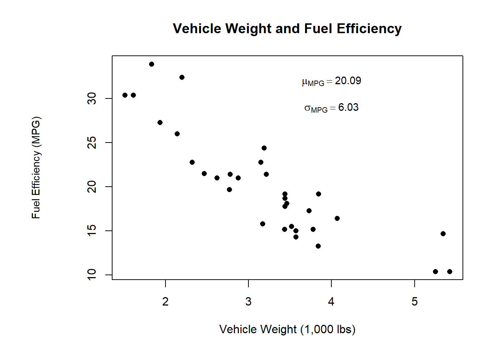
# Use real Old Faithful geyser data
data(faithful)
# Give extra room around all four margins
par(mar = c(7, 7, 6, 6))
# Create the main plot
plot(
faithful$eruptions,
faithful$waiting,
main = "",
xlab = "",
ylab = "",
pch = 16,
col = "gray40"
)
# X-axis title
mtext(
"Eruption Duration (Minutes)",
side = 1,
line = 2.5,
cex = 0.9
)
# Y-axis title
mtext(
"Waiting Time to Next Eruption (Minutes)",
side = 2,
line = 4,
cex = 0.9
)
# Main title
mtext(
"Old Faithful Geyser Eruptions",
side = 3,
line = 2,
adj = 0,
cex = 1.1,
font = 2
)
# Generation date
mtext(
paste("Generated:", Sys.Date()),
side = 3,
line = 0.5,
adj = 1,
cex = 0.65,
col = "gray40"
)
# Data source citation
mtext(
"Source: R datasets::faithful",
side = 1,
line = 5,
adj = 1,
cex = 0.65,
col = "gray40"
)
# Course / organization branding
mtext(
"EPPS 6356 Data Visualization",
side = 4,
line = 3,
cex = 0.65,
col = "gray40"
)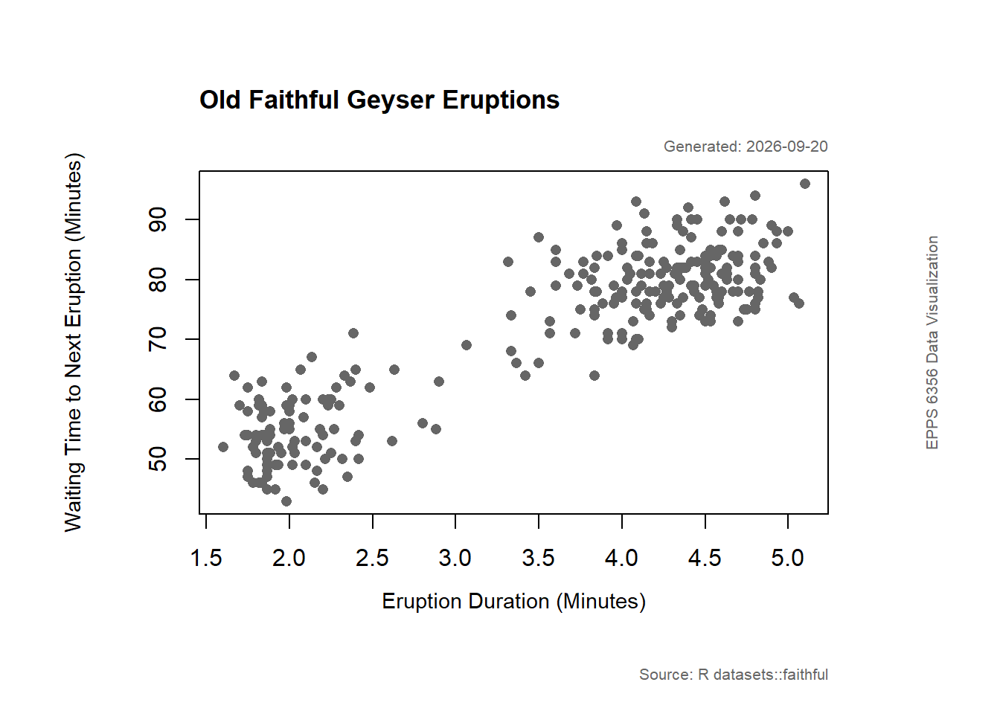
[1] "Year" "Glob" "NHem" "SHem" "24N-90N" "24S-24N" "90S-24S"
[8] "64N-90N" "44N-64N" "24N-44N" "EQU-24N" "24S-EQU" "44S-24S" "64S-44S"
[15] "90S-64S"# Keep data from 1925 through 2025
temp_data <- subset(
temp_data,
Year >= 1925 & Year <= 2025
)
# Give extra space for the y-axis title
par(mar = c(5, 8, 4, 2))
# 2. Draw Northern Hemisphere temperature anomaly
plot(
temp_data$Year,
temp_data$NHem,
type = "l",
col = "#D55E00",
lwd = 2.5,
xlab = "Year",
ylab = "",
main = "Temperature Anomalies by Hemisphere",
ylim = range(
temp_data$NHem,
temp_data$SHem,
na.rm = TRUE
)
)
# Move y-axis title farther away from the numbers
mtext(
"Temperature Anomaly (°C)",
side = 2,
line = 5,
cex = 0.9
)
# Add a light horizontal grid
abline(
h = pretty(
range(temp_data$NHem, temp_data$SHem, na.rm = TRUE)
),
col = "gray90",
lty = 1
)
# Add zero-anomaly reference line
abline(
h = 0,
col = "gray50",
lty = 3
)
# Redraw Northern Hemisphere line over the grid
lines(
temp_data$Year,
temp_data$NHem,
col = "#D55E00",
lwd = 2.5,
lty = 1
)
# 3. Add Southern Hemisphere temperature anomaly
lines(
temp_data$Year,
temp_data$SHem,
col = "#0072B2",
lwd = 2.5,
lty = 2
)
# 4. Add legend
legend(
"topleft",
legend = c(
"Northern Hemisphere",
"Southern Hemisphere"
),
col = c(
"#D55E00",
"#0072B2"
),
lty = c(1, 2),
lwd = 2.5,
title = "Hemisphere",
bty = "n",
cex = 0.8
)
# Add data source
mtext(
"Source: NASA GISTEMP v4",
side = 1,
line = 4,
adj = 1,
cex = 0.6,
col = "gray40"
)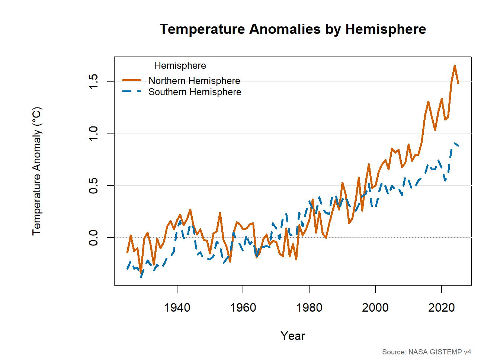
For this analysis, I selected 2025 because it is the most recent year available in the Happy Planet Index dataset. This allows the analysis to represent the latest country-level observations included in the 2006–2025 workbook.
Warning: package 'readxl' was built under R version 4.5.3Warning: Expecting logical in V2436 / R2436C22: got 'A'Warning: Expecting logical in W2436 / R2436C23: got 'Year_lookup!A1:A2'Warning: Expecting logical in V2437 / R2437C22: got 'B'Warning: Expecting logical in W2437 / R2437C23: got 'Year_lookup!B1:B2'Warning: Expecting logical in V2438 / R2438C22: got 'C'Warning: Expecting logical in W2438 / R2438C23: got 'Year_lookup!C1:C2'Warning: Expecting logical in V2439 / R2439C22: got 'D'Warning: Expecting logical in W2439 / R2439C23: got 'Year_lookup!D1:D2'Warning: Expecting logical in V2440 / R2440C22: got 'E'Warning: Expecting logical in W2440 / R2440C23: got 'Year_lookup!E1:E2'Warning: Expecting logical in W2441 / R2441C23: got 'Year_lookup!F1:F2'Warning: Expecting logical in V2442 / R2442C22: got 'G'Warning: Expecting logical in W2442 / R2442C23: got 'Year_lookup!G1:G2'Warning: Expecting logical in V2443 / R2443C22: got 'H'Warning: Expecting logical in W2443 / R2443C23: got 'Year_lookup!H1:H2'Warning: Expecting logical in V2444 / R2444C22: got 'I'Warning: Expecting logical in W2444 / R2444C23: got 'Year_lookup!I1:I2'Warning: Expecting logical in V2445 / R2445C22: got 'J'Warning: Expecting logical in W2445 / R2445C23: got 'Year_lookup!J1:J2'Warning: Expecting logical in V2446 / R2446C22: got 'K'Warning: Expecting logical in W2446 / R2446C23: got 'Year_lookup!K1:K2'Warning: Expecting logical in V2447 / R2447C22: got 'L'Warning: Expecting logical in W2447 / R2447C23: got 'Year_lookup!L1:L2'Warning: Expecting logical in V2448 / R2448C22: got 'M'Warning: Expecting logical in W2448 / R2448C23: got 'Year_lookup!M1:M2'Warning: Expecting logical in V2449 / R2449C22: got 'N'Warning: Expecting logical in W2449 / R2449C23: got 'Year_lookup!N1:N2'Warning: Expecting logical in V2450 / R2450C22: got 'O'Warning: Expecting logical in W2450 / R2450C23: got 'Year_lookup!O1:O2'Warning: Expecting logical in V2451 / R2451C22: got 'P'Warning: Expecting logical in W2451 / R2451C23: got 'Year_lookup!P1:P2'New names:
• `` -> `...15`
• `` -> `...21`
• `` -> `...22`
• `` -> `...23`# A tibble: 6 × 23
`HPI rank` Country ISO Continent Population Year `Life Expectancy`
<dbl> <chr> <chr> <dbl> <dbl> <dbl> <dbl>
1 1 Costa Rica CRI 1 5153. 2025 81.2
2 2 Guatemala GTM 1 18688. 2025 72.9
3 3 Tajikistan TJK 7 10787. 2025 72.1
4 4 Spain ESP 3 47890. 2025 84.0
5 5 Colombia COL 1 53426. 2025 78.1
6 6 Switzerland CHE 3 8967. 2025 84.2
# ℹ 16 more variables: `Life Satisfaction` <dbl>, `Ecological Footprint` <dbl>,
# `CoV adjusted ladder` <dbl>, `Adj Lad x Life Exp` <dbl>,
# `Extra HPLY (above min)` <dbl>, `CoV Adj Footprint` <dbl>, `HPLY/EF` <dbl>,
# ...15 <chr>, HPI <dbl>, `Footprint category` <dbl>,
# `EF biocapacity for year` <dbl>, `GDP per capita` <dbl>,
# `GDP per capita (cleaned) - 2024 used for 2025` <dbl>, ...21 <lgl>,
# ...22 <lgl>, ...23 <lgl>[1] 2025[1] 153